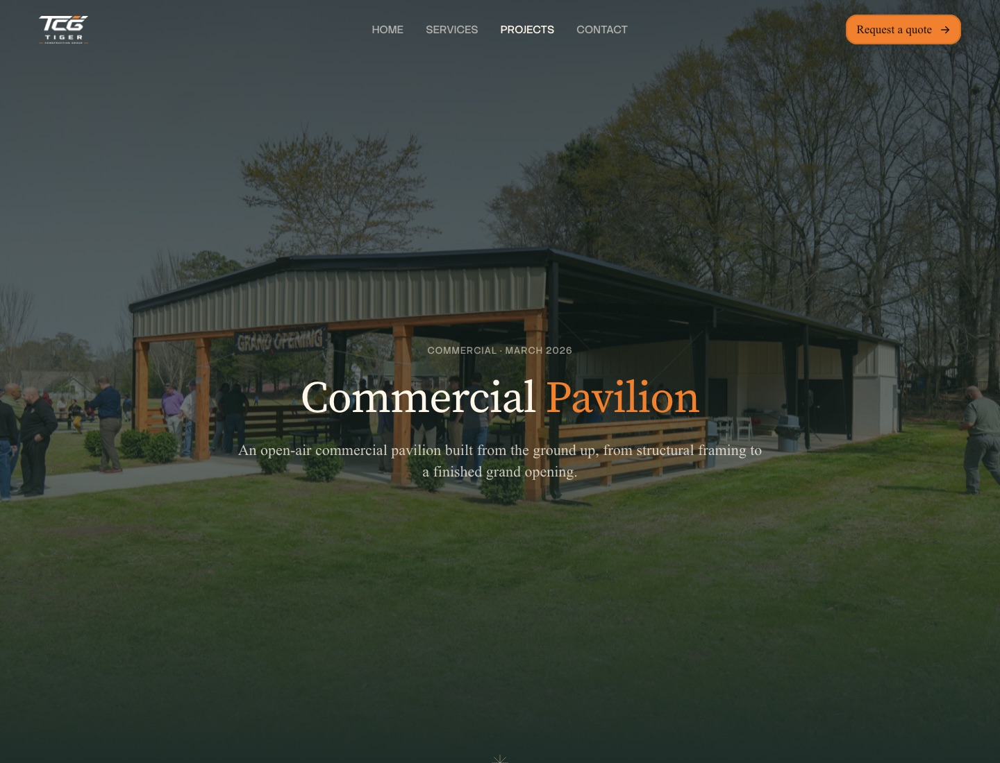
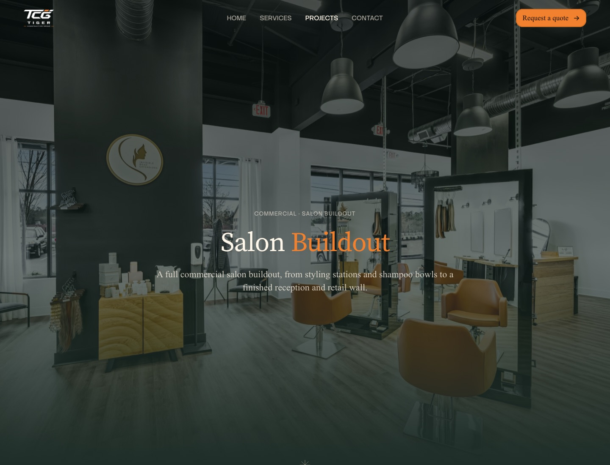
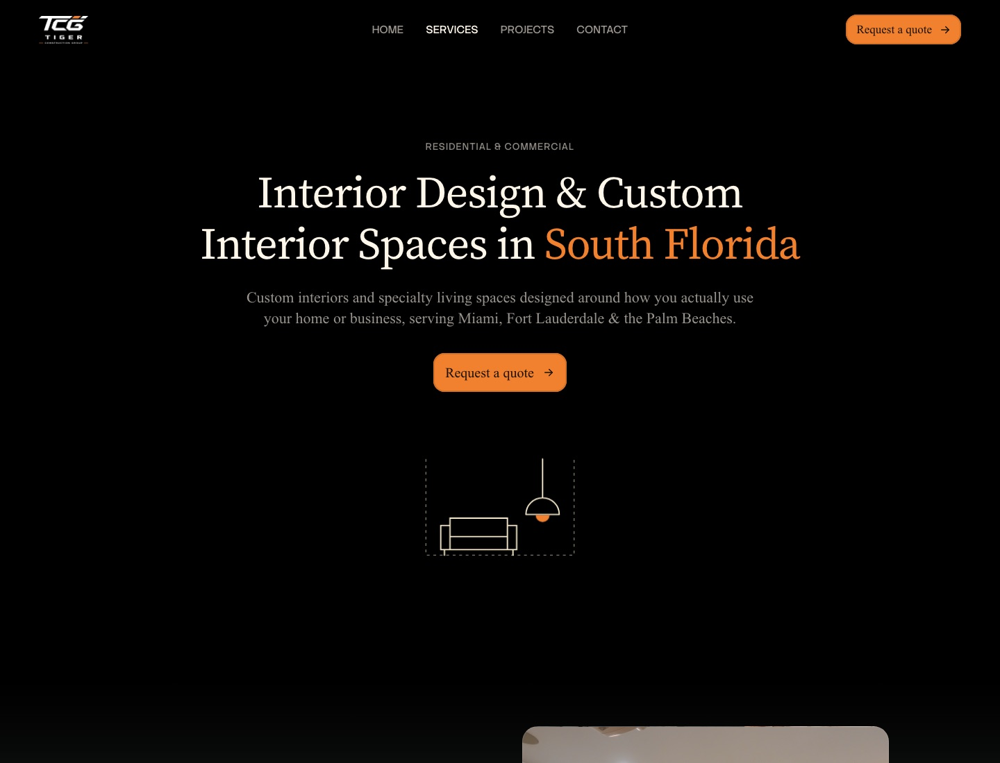
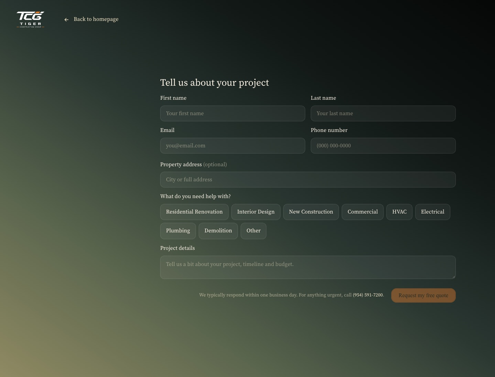

Tiger Construction is a full-service remodeling and construction company serving homes and businesses across Miami-Dade, Broward and Palm Beach.
Renovations, new construction, interior design, and every trade in between: HVAC, electrical, plumbing and demolition.
One licensed team, one contract, from demo to final walkthrough.
They came to us to design and build their website, the quote request flow, and the visual direction for the brand online.
Visit websiteMost contractor websites are either outdated or generic: stock photos, walls of text, and a contact form buried at the bottom.
Tiger’s biggest strength is that clients only deal with one team instead of juggling five contractors. They needed a site that made that obvious in seconds, felt premium enough for luxury South Florida homeowners, and still spoke directly to business owners, property managers and HOAs looking for commercial work.
We designed and developed the full website in Framer, with a clean, high-contrast layout that puts the work front and center and keeps the copy short and direct.
The hero leads with a custom Midjourney visual. From there, every trade is easy to scan, residential and commercial clients each get their own section, and project pages showcase recent work.
The main deliverable was the quote request flow, designed and built entirely in Framer: a focused, distraction-free page where clients pick what they need, describe the project, and submit in under a minute.
The result is a website that feels as organized and reliable as the team behind it, and turns visitors into quote requests.




Figma, Framer, Rive